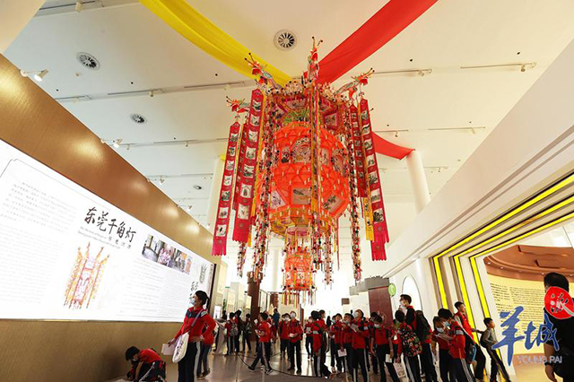
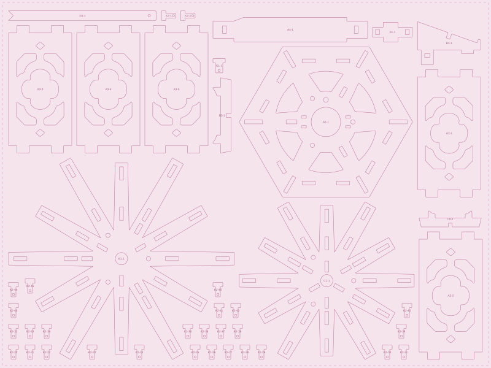

千角灯
文化调研 / THE ORIGIN
有些灯，
照亮的是一座城
先读懂千角灯，再寻找它走进当代生活的方式

东莞 · 千角灯从宗祠灯火，到城市非遗
东莞传统灯彩，与莞城赵氏的地方记忆相连。八角宫灯的形式，延续着岭南节庆的灯火
2006 年，灯彩（东莞千角灯）列入第一批国家级非物质文化遗产代表性项目名录
阅读资料 · 中国非物质文化遗产网层叠的形，重复的构，团聚的意
把这些线索留下，让参与的门槛变小
现代转译 / THE REFRAME
转译的，
是参与的方式
保留形与意，
让搭建成为新的接触方式
外在 · 有形
FORM & MATERIAL宫灯轮廓、层叠节奏、垂挂灯带
双层飞檐、六向构成、长短挂片
以亚克力与镂空重新表达
中间 · 行为
BEHAVIOR & USE匠人将平面材料组织成空间结构
把搭建变成可参与的体验
识别板件、理解支撑、逐层拼合
内在 · 无形
MEANING & EMOTION人丁兴旺、家族记忆与节庆团聚
一起完成、留作日常陈设
让文化记忆附着在亲手完成的物件上
理论参照：林荣泰 · 文化产品设计模型（2007）阅读原论文
为什么，是拼接玩具？
结构，成为体验
在拼装中，看懂平面如何成为空间
参与，连接记忆
从观察，到亲手完成
体量，回到日常
把地方文化带回桌面与生活
转译说明：传统千角灯为八角宫灯体系；V13 采用六向模块化构成，是受其启发的当代玩具设计。海棠漏窗为本项目另引入的园林纹样。转译的体验价值仍需通过后续使用研究检验
实验与测试 / FROM FILE TO FORM
从纸板，
到一盏灯

真实 V13 轮廓数据 · 板位预览
在材料里，验证结构
先用纸板验证比例与搭建，再迭代亚克力连接
现场照片记录纸板探索过程；亚克力的实际插合、公差与吊挂表现，仍需用同批材料另行试切和实测
结构细节 / THE CONNECTION
稳稳托住，
每一片檐瓦
横梁两端对准角脊承口，中间开口与中肋半搭接
两端落座，中间搭接
两端入角脊，中间与中肋半搭接
窄端朝脊，双槽对舌
窄端朝屋脊，双槽对准双舌后直插
双侧有托，片销有止退
横梁与中肋共同承托，片销穿线止退
板件图鉴 / A LIBRARY OF PARTS
每一块，
都值得被看见
点选，单独查看
没有找到对应板件。试试其他编号或名称
共 23 类板件，137 件实装；另含 6 件备用片销
千角结构工作室 / QIANJIAO OBJECT LAB
让更多文化，
有新的拼法
读懂文化，拆解结构
让 AI 辅助下一次创作
文化解读
读懂形态与寓意
结构转译
把体量拆成模块
AI 辅助探索
辅助探索，由设计者校核
实物迭代
用实物验证连接
从一个文化线索出发
选择一个方向，看看这套方法如何继续
下列为工作室发展构想
把透光的秩序，拼成桌面屏风
提取几何窗格与重复单元，探索可扩展的亚克力格栅模块
设计者核验：纹样来源、模块强度与边缘触感Culture is a beginning
Make it part of life